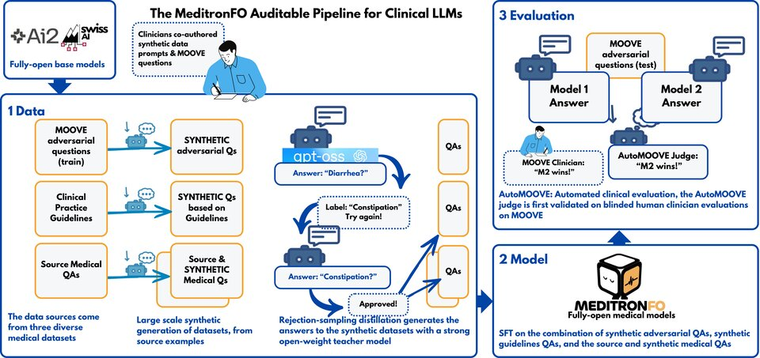

MeditronFO
MeditronFO
We're introducing MeditronFO, the first fully-open pipeline for creating medical LLMs, and the first fully-open medical LLMs built with it. Apertus-70B-MeditronFO closes 40% of the gap to the open-weight MedGemma-27B on the five-benchmark medical average.
Introduction
Medical LLMs are becoming common in high-stakes clinical settings, with little transparency in their creation process. The majority are either open-weight, like MedGemma, Aloe Beta, Meditron and BioMistral, or proprietary, like Med-PaLM and AMIE. Without access to both the training data and the training pipeline, a comprehensive audit is impossible.
Fully-open LLMs, which release not just their weights but also their training code and data, have emerged, such as Apertus, OLMo and EuroLLM, but they have not yet been adapted to medicine. MeditronFO (Meditron Fully Open) does this: we finetune five fully-open base models from three families into the first fully-open medical LLMs, and one open-weight control, Gemma-3-27B, to enable a fairer comparison with MedGemma.
- 54.56%five-benchmark medical average for Apertus-70B-MeditronFO, up from 48.35% for its base
- 49.3%on HealthBench for Apertus-70B-MeditronFO, up from 39.4% for its base
- 89.7%AutoMOOVE win rate of Apertus-70B-MeditronFO over its base, under a majority vote of three LLM judges
- 534ktraining examples, released with the code and outputs of every step: generation, distillation, decontamination and audit
What "fully-open" means
Among existing medical LLMs, the MeditronFO models are the only ones built on a fully-open base that release their medical data, the data pipeline and the training code.
| Model | Fully-open base | Medical data | Data pipeline | Training code |
|---|---|---|---|---|
| Med-Gemini | No | No | No | No |
| Meditron-3 (Llama 3.1) | No | No | No | No |
| MedGemma-27B | No | No | No | No |
| BioMistral | No | Yes | No | No |
| Aloe Beta | No | Yes | No | No |
| HuatuoGPT-o1 | No | Yes | No | Yes |
| Gemma-3-27B-MeditronFO | No | Yes | Yes | Yes |
| Apertus, OLMo-2, EuroLLM MeditronFO | Yes | Yes | Yes | Yes |
Performance
All MeditronFO finetunes improve their score on HealthBench, an open-ended clinical reasoning evaluation against structured, physician-authored rubrics. Apertus-70B-MeditronFO reaches 49.3%, up from 39.4% for Apertus-70B-Instruct; MedGemma-27B reaches 54.8%.
HealthBench full
Score vs model sizeShow as a table
Five medical benchmarks
Finetuning on the MeditronFO corpus significantly raises the average of the four multiple-choice benchmarks for Apertus-70B (+5.28), OLMo-2-32B (+4.92) and Apertus-8B (+3.32); for EuroLLM-22B, EuroLLM-9B and Gemma-3-27B the change lies within the 95% interval. Apertus-70B-MeditronFO reaches the highest scores among fully-open medical LLMs.
Accuracy (%). Multiple-choice benchmarks decoded greedily; HealthBench sampled at temperature 0.7 and graded by Gemma-4-31B. Avg: mean of the five. Gain: multiple-choice average over the base, with a 95% bootstrap interval. Best value per column in bold.
Clinician preference
Multiple-choice questions fail to capture clinically important dimensions, such as contextual awareness, communication, harmlessness, and alignment with guidelines. MOOVE is a clinician-only platform where clinicians write adversarial vignettes, compare model responses and rate them on criteria such as safety, contextual fit, clarity and completeness. But clinician time limits the scale of such evaluations.
AutoMOOVE automates these pairwise comparisons with LLM judges. We validate the judges against blinded clinician comparisons from MOOVE before using them: on the 576 pairs where all clinicians agreed, the three-judge majority agrees with them at κ = 0.564 (0.718 without ties). The 516 vignettes those pairs cover, kept out of training, are the questions on which we compare models.
AutoMOOVE
Win rate on 516 clinician-written vignettesFive of the six finetunes are preferred over their base, from 59.2% (EuroLLM-22B) to 89.7% (Apertus-70B), and EuroLLM-9B is level with its base. Against MedGemma-27B, Gemma-3-27B-MeditronFO reaches a 57.1% win rate (its base: 35.1%) and Apertus-70B-MeditronFO 35.8% (its base: 2.6%). Gemma-3-27B-MeditronFO is level with or ahead of MedGemma-27B, depending on the judge, while Apertus-70B-MeditronFO loses to it under all three judges.
Can you judge like a clinician?
Before trusting the judges, try their job. Five real MOOVE vignettes, written by clinicians in Ethiopia, Switzerland and Kenya, where every clinician who reviewed them picked the same answer. The answers come from the models on MOOVE at the time, not from MeditronFO.
How it's built

- Data. The training corpus combines four datasets. Curated QA aggregates seven commonly used public medical QA datasets. The other three are generated by the open-weight gpt-oss-120b: Synthetic Curated QA (184.5k) expands Curated QA with new exam-style and open-ended questions, Synthetic vignettes (24.0k) are new adversarial vignettes modelled on clinician-authored vignettes from MOOVE, and Guidelines QA (129.8k) are questions generated from 14,192 full-text clinical practice guidelines.
- Clinician review. A panel of four clinicians, with expertise across global health, humanitarian response, infectious disease, primary care, pediatrics and surgery, co-authored the final generation prompts.
- Rejection-sampling distillation. gpt-oss-120b writes the answers. Every item with a gold label is rejection-sampled with pass@8, and examples never reaching the gold label are dropped.
- Corpus validation. A two-stage n-gram decontamination ensures no training sample overlaps the evaluation data, including the AutoMOOVE vignettes. Two LLM judges audit a sample of 200 items per dataset.
- Training. Supervised finetuning on the MeditronFO corpus, preserving each model's native instruction-tuning format, run on the Alps supercomputer at CSCS.
A second teacher, Qwen3.8-27B, gives similar results at 8B except on MedMCQA and IFEval. At 70B, gpt-oss-120b is better on multiple choice, and Qwen3.8 on HealthBench and IFEval.
Limits
MeditronFO closes part of the gap to open-weight medical models. It still has limits.
- For research, not for care. MeditronFO models are not medical devices and have not been tested in clinical practice. Don't use them to make decisions about a patient.
- Still behind MedGemma. On the five-benchmark medical average, Apertus-70B-MeditronFO reaches 54.56%, against 63.75% for MedGemma-27B.
- General-purpose capability decreases. The general-purpose average falls for four of the six finetunes, mostly through IFEval (−17.6 to −31.4), in line with other domain-specific finetuning recipes.
- Longer answers. MeditronFO finetunes answer at greater length than their bases, and part of the HealthBench gain comes from it. After a length adjustment, Apertus-70B-MeditronFO scores 40.3%, against 35.7% for its base.
- The judges are not clinicians. Safety has low agreement both between clinicians and between judge and clinicians (κ 0.311, close to the 0.306 between clinicians). For some finetunes, the preference over their base is partly a length effect.
- The corpus is not perfect. Two LLM judges still flag 9.7 to 12.2% of the sampled rows of the final corpus.
Availability
The MeditronFO models, the training data and the code are available now on Hugging Face and GitHub. The fully-open models and the corpus are released under Apache-2.0, and Gemma-3-27B-MeditronFO keeps the Gemma licence. The data card lists the licence of each source.
- Apertus-70B-MeditronFOFully-open · 70B
- OLMo-2-32B-MeditronFOFully-open · 32B
- EuroLLM-22B-MeditronFOFully-open · 22B
- EuroLLM-9B-MeditronFOFully-open · 9B
- Apertus-8B-MeditronFOFully-open · 8B
- Gemma-3-27B-MeditronFOOpen-weight · 27B
- Training data533,888 examples
- CodeData generation, decontamination, training, evaluation
Cite
@misc{theimerlienhard2026fullyopenmeditronauditable,
title={Fully Open Meditron: An Auditable Pipeline for Clinical LLMs},
author={Xavier Theimer-Lienhard and Mushtaha El-Amin and Fay Elhassan and Sahaj Vaidya and Victor Cartier-Negadi and David Sasu and Lars Klein and Mary-Anne Hartley},
year={2026},
eprint={2605.16215},
archivePrefix={arXiv},
primaryClass={cs.AI},
url={https://arxiv.org/abs/2605.16215}
}